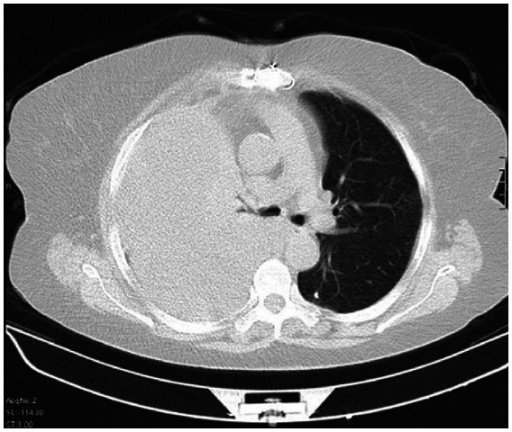

Ficha del catálogo
Hemotórax
- Sistema
- Respiratorio
- Modalidad
- TC
- Región
- Tórax
- Dificultad
- Intermedio
Acumulación de sangre en la cavidad pleural, casi siempre de origen traumático por lesión de vasos intercostales, del parénquima o de estructuras mediastínicas. También puede aparecer tras procedimientos o de forma espontánea en pacientes anticoagulados. Su volumen y su ritmo de aumento determinan la necesidad de drenaje o de cirugía.
Técnica
Tomografía de tórax con contraste intravenoso en el contexto traumático, midiendo la atenuación del líquido y buscando extravasación activa.
Qué observar
- Derrame pleural de atenuación superior a la del líquido simple
- Nivel entre componentes de distinta densidad por sedimentación de los hematíes
- Extravasación de contraste dentro de la colección, que indica sangrado activo
- Coágulos de mayor densidad adheridos a la pleura
- Fracturas costales, contusión pulmonar y neumotórax acompañantes
- Desplazamiento mediastínico en las colecciones voluminosas
Hallazgos
Colección pleural de densidad elevada y heterogénea con sedimentación, junto a lesiones traumáticas de la pared o del parénquima.
Perlas
Medir la atenuación del derrame es rápido y muy rentable en el traumatismo. Un líquido pleural denso obliga a buscar el foco de sangrado, sobre todo en los vasos intercostales adyacentes a una fractura.
Diagnóstico diferencial
- Derrame pleural simple
- Atenuación próxima a la del agua y contenido homogéneo.
- Empiema
- Realce y engrosamiento de las hojas pleurales con contexto infeccioso.
- Quilotórax
- Densidad baja con antecedente de cirugía o de obstrucción linfática.
Simuladores
- Atelectasia adyacente que aumenta la densidad aparente
- Endurecimiento del haz junto a la columna
- Derrame con proteínas elevadas de otra causa
Por modalidad
- RX
- Opacidad del hemitórax sin distinguir la naturaleza del líquido
- TC
- Caracteriza la densidad, cuantifica el volumen y localiza el sangrado
- US
- Detecta el líquido a pie de cama y guía el drenaje
Protocolo
Tomografía con contraste en el paciente traumatizado, con lectura en ventana de partes blandas y medición de la atenuación del derrame.
Clasificación
Errores frecuentes
- No medir la atenuación del derrame en el traumatismo torácico
- Pasar por alto la extravasación activa de contraste
- Considerar estable un hemotórax sin comparar el volumen entre estudios

hemotorax traumatismo toracico derrame denso sangrado activo pleura